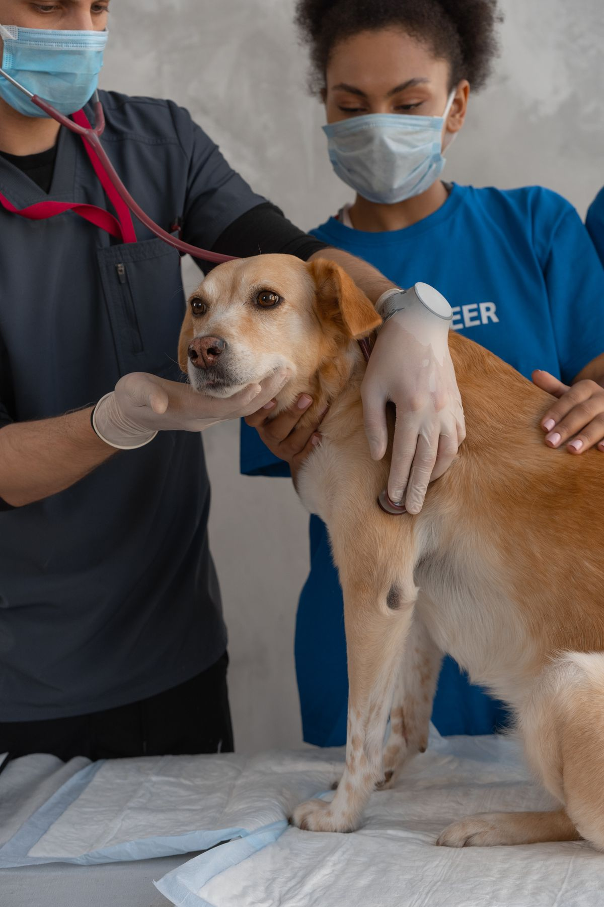
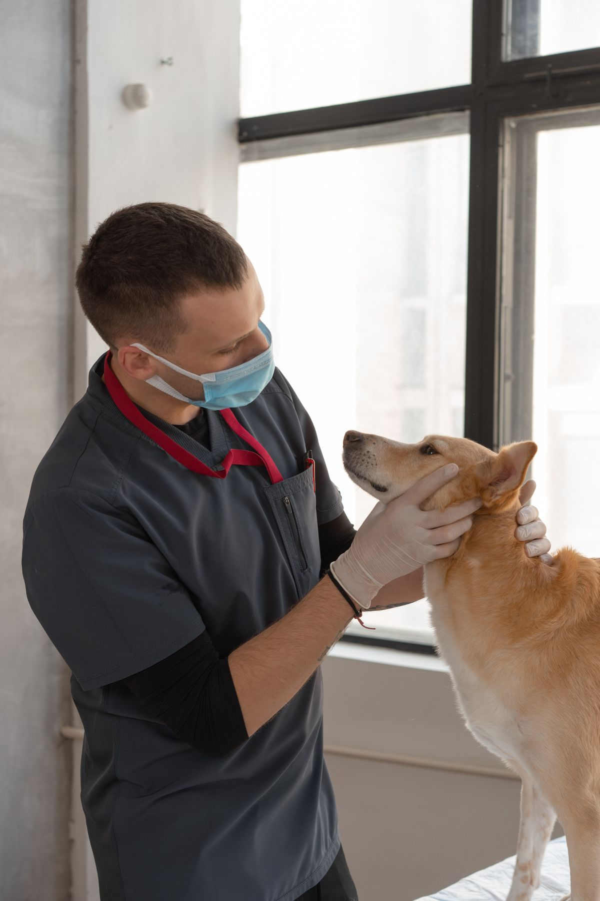
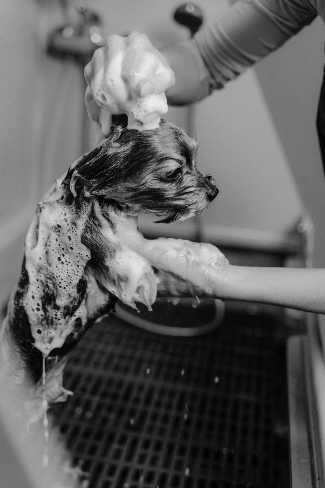

Services
Everything your pet needs, in one place.
Ten services under one roof, from first checkups to specialized care. Every visit starts with a conversation about what your pet needs.
- 01
Routine wellness exams
Thorough physical exams for dogs, cats, and exotic pets, at every stage of life.
- 02
Vaccinations
Core and lifestyle vaccines to protect against preventable disease.
- 03
Dental care
Cleanings and dental exams that protect teeth and gums.
- 04
Surgery
In-clinic surgical care, from routine procedures to involved operations.
- 05
Oncology
Diagnosis and treatment planning for pets with cancer.
- 06
Acupuncture
Acupuncture offered as part of a broader care plan.
- 07
Emergency care
Urgent problems seen during clinic hours. Call first so the team can be ready.
- 08
Boarding
A place for your pet to stay while you are away.
- 09
Grooming
Bathing and grooming to keep coats clean and comfortable.
- 10
Microchipping
Permanent identification, in case your pet ever gets lost.
At the exam table
Up close at the exam table.


